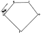

Para quaisquer inteiros positivos \(a\) e \(b\text{,}\) existe um único par \((q, r)\) de inteiros não negativos tais que \(b = aq + r\) e \(r \lt a\text{.}\) Os números \(q\) e \(r\) são chamados de quociente e resto, respectivamente, da divisão de \(b\) por \(a\text{.}\)
O teorema anterior admite um enunciado mais geral: Para quaisquer inteiros \(a\) e \(b\text{,}\) com \(a\neq 0\text{,}\) existe um único par de inteiros \((q, r)\) tais que \(b = aq + r, ~0 \leq r \lt |a|\text{.}\) Por exemplo,
Abaixo temos um código em SageMath, no qual podemos trocar os valores de \(b\) e \(a\) nas linhas \(1\) e \(2\text{,}\) respectivamente. Ao clicar em Executar (Sage) obtemos o quociente e o resto na divisão de \(b\) por \(a\text{.}\)
Nota1.1.5.(PTOM).
De modo geral, fixado um número natural \(a\geq 2\text{,}\) pode-se sempre escrever um número qualquer \(b\text{,}\) de modo único, na forma \(b = aq+r\text{,}\) na qual \(q, r\) são inteiros e \(0\leq r \lt a\text{.}\)
Por exemplo, fixado um valor para \(a\text{,}\) qualquer inteiro \(b\) pode ser escrito em apenas uma das seguintes formas
Dados dois números primos \(p\lt q\text{,}\) dizemos que ele são primos gêmeos se \(q-p=2\text{.}\) Prove que para cada par de primos gêmeos com \(p\lt q\text{,}\) se \(p>3\text{,}\) então \(p+1\) deixa resto zero na divisão por \(3\text{.}\)
Pela Nota 1.1.5, \(p\) só pode assumir uma das três formas: \(3k, 3k+1, 3k+2\text{.}\) Podemos analizar cada um dos casos.
Caso 1 (\(p=3k\)). Neste caso o número não seria primo, então este caso está descartado.
Caso 2 (\(p=3k+1\)). Neste caso, \(p+1 = 3k+2\) e \(q = p+2 = 3k+3=3(k+1)\) não seria primo, o que é uma contradição.
Caso 3 (\(p=3k+2\)). Neste caso, \(p+1 = 3(k+1)\) que é múltiplo de \(3\) e \(q = 3(k+1)+1\text{.}\) Portanto, este é o único caso possível e o número \(p+1\) sempre deixa resto zero na divisão por \(3\text{.}\)
Exemplo1.1.7.
Encontre um número natural \(N\) que, ao ser dividido por \(10\text{,}\) deixa resto \(9\text{,}\) ao ser dividido por \(9\) deixa resto \(8\text{,}\) e ao ser dividido por \(8\) deixa resto \(7\text{.}\)
Isto significa que existem \(50\) números divisíveis por \(5\) entre \(1\) e \(253\text{,}\) pois ao escrever todos os números neste intervalo, o último que deixa resto zero será no número \(5\cdot 50 = 250\text{.}\) Observe,
Aplicando o (Teorema dos Restos), o resto de \(1002\cdot1003\cdot1004\) na divisão por \(7\) é o mesmo que o resto de \(1\cdot 2\cdot 3\) na divisão por \(7\text{.}\) Como \(1\cdot 2\cdot 3 = 6\) Temos,
Como o número \(4\) deixa resto \(1\) na divisão por \(3\text{,}\)\(4^{5000}\) deixa o mesmo resto que \(\underbrace{1\cdot 1\cdot 1\cdots 1}_{5000} = 1\) na divisão por \(3\text{.}\)
Exemplo1.1.15.
Qual o resto que o número \(2^{2k+1}\) deixa quando dividido por \(3\text{?}\)
\(4\) deixa resto \(1\) na divisão por \(3\text{,}\) logo \(4^k\) também deixa resto \(1\) na divisão por 3;
\(2\) deixa resto \(2\) na divisão por \(3\text{.}\)
Pelo (Teorema dos Restos), \(2^{2k+1}\) deixa o mesmo resto que \(4^k\cdot 2\) na divisão por \(3\text{,}\) ou seja, o resto é o mesmo que o resto de \(1\cdot 2 = 2\) na divisão por \(3\text{.}\)
Exemplo1.1.16.
Qual o resto de \(n^3+2n\) na divisão por \(3\text{?}\)
Dado um número \(n\text{,}\) ele pode ser escrito em apenas uma das três formas: \(3q, 3q+1\) ou \(3q+2\text{.}\) Pelo (Teorema dos Restos), basta analisar os três possíveis restos na divisão de \(n\) por \(3\text{.}\)
Para cada número \(k\) escrito no denominador, existe o número \(2k\) no numerador. Agrupando as frações \(\frac{2k}{k}\) com \(1\leq k\leq n\text{,}\) sobrará todos os números ímpares de \(1\) até \(2n\text{.}\) Ou seja,
\begin{gather*}
\begin{cases}
a+3 = 5 \Rightarrow a = 2 \\
b+2 = 17 \Rightarrow b = 15
\end{cases}
\end{gather*}
e
\begin{gather*}
\begin{cases}
a+3 = 17 \Rightarrow a = 14 \\
b+2 = 5 \Rightarrow b = 3
\end{cases}
\end{gather*}
Exemplo1.1.19.
(OBMEP 2013). Lucas pensou em um número, dividiu-o por \(285\) e obteve resto \(77\text{.}\) Se ele dividir o número em que pensou por \(57\text{,}\) qual o resto que ele vai encontrar?
Portanto, \(99\) divide \(ab2016\) se, e somente se, \(99\) divide \((ab+20+16)\text{.}\) Ou seja, como \(99\) possui dois diígitos e \((ab+20+16)\) é menor que \(2\cdot 99\text{,}\) temos a seguinte igualdade
Seja \(A=777\ldots 777\) um número onde o dígito "\(7\)" aparece \(1001\) vezes. Determine o quociente e o resto da divisão de \(A\) por \(1001\text{.}\)
4.
Prove que, o número \(1^{99}+2^{99}+3^{99}+4^{99}+5^{99}\) é múltiplo de \(5\text{.}\)
5.
Mostre que o número \(1^n+8^n-3^n-6^n\) é múltiplo de \(10\text{.}\)
Subseção1.1.1.1Simulados Antigos
6.
(2013) O algarismo das unidades do número \(1\times 3\times 5\times \cdots\times 97\times 99\) é:
(2015) Paula iniciou um programa de ginástica no qual os dias de treino são separados por dois dias de descanso. Se o primeiro treino foi em uma segunda-feira, em qual dia da semana cairá o centésimo treino?
No Pentágono \(ABCDE\) abaixo, \(AB = BC = CD = 2\) metros e \(DE = EA = 3\) metros. Uma formiguinha parte do vértice \(A\) e caminha com velocidade constante de um metro por segundo ao longo de seus lados sempre no mesmo sentido. Em que ponto estará no \(2013°\) segundo?

\begin{equation*}
(a) A \quad (b) B\quad (c) C \quad (d) D \quad (e) E
\end{equation*}
Esmeralda rasgou uma folha em \(n\) pedaços e, em seguida, pegou uma dessas partes e rasgou-a também em \(n\) pedaços. Não satisfeita, pegou uma dessas últimas partes e rasgou também em \(n\) pedaços. Qual dos números a seguir poderia ser o total de pedaços obtidos por Esmeralda no final?